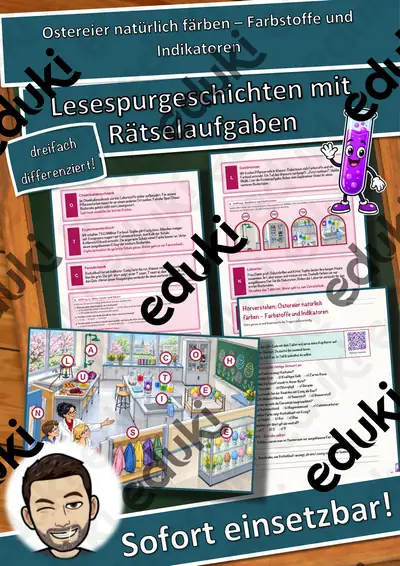
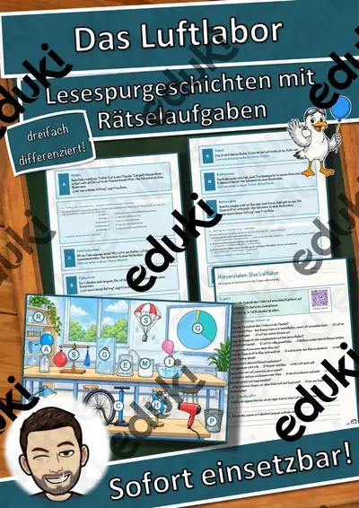
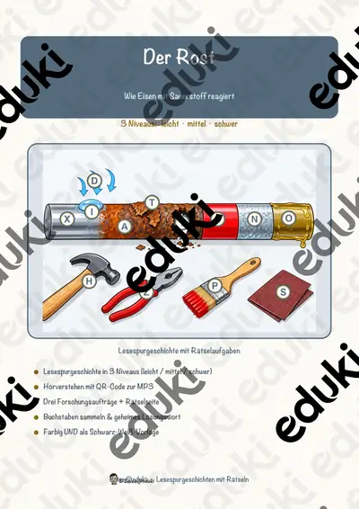
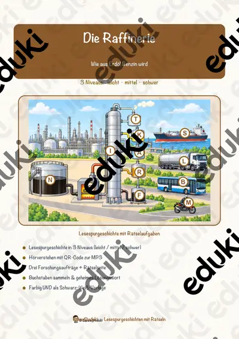
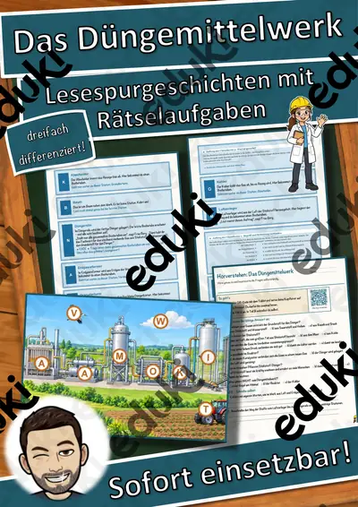
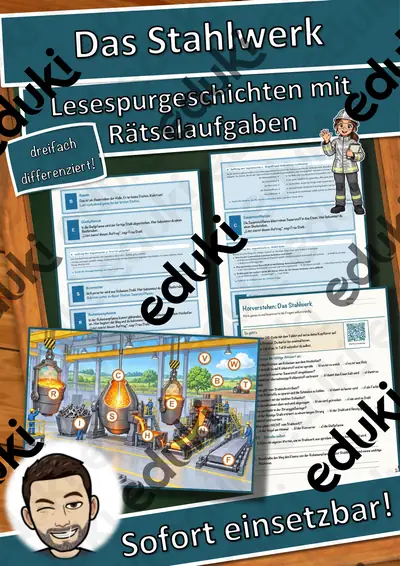
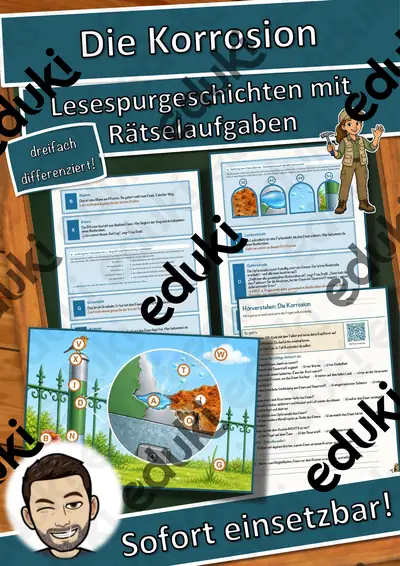
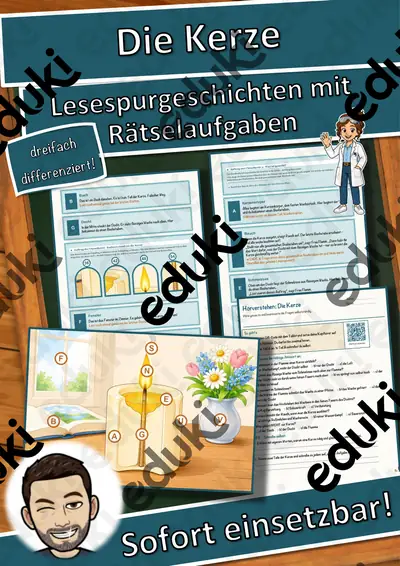

Ostereier natürlich färben – Farbstoffe und Indikatoren – Lesespurgeschichte mit Rätselaufgaben (Klasse 8)

Handwärmer – wie Wärme aus der Tasche entsteht – Lesespurgeschichte mit Rätselaufgaben (Klasse 8)

Streusalz und Gefrierpunkt – warum Salz Eis schmelzen lässt – Lesespurgeschichte mit Rätselaufgaben (Klasse 8)

Flammenfärbung – Metallsalze in der Brennerflamme nachweisen – Lesespurgeschichte mit Rätselaufgaben (Klasse 8)

Elektroschrott – was in alten Handys steckt – Lesespurgeschichte mit Rätselaufgaben (Klasse 8)

Das Wasserlabor – Lesespurgeschichte mit Rätselaufgaben (Klasse 5)

Das Luftlabor – Lesespurgeschichte mit Rätselaufgaben (Klasse 5)

Die Gärung – Lesespurgeschichte mit Rätselaufgaben (Klasse 8)

Der Rost – Lesespurgeschichte mit Rätselaufgaben (Klasse 9)

Das Salz – Lesespurgeschichte mit Rätselaufgaben (Klasse 8)

Das Atom – Lesespurgeschichte mit Rätselaufgaben (Klasse 8)

Die Raffinerie – Lesespurgeschichte mit Rätselaufgaben (Klasse 9)

Das Streichholz – Lesespurgeschichte mit Rätselaufgaben (Klasse 8)

Die Seife – Lesespurgeschichte mit Rätselaufgaben (Klasse 9)

Die Filtration – Lesespurgeschichte mit Rätselaufgaben (Klasse 8)

Die Neutralisation – Lesespurgeschichte mit Rätselaufgaben (Klasse 9)

Das Galvanisieren – Lesespurgeschichte mit Rätselaufgaben (Klasse 9)

Das Düngemittelwerk – Lesespurgeschichte mit Rätselaufgaben (Klasse 9)

Das Stahlwerk – Lesespurgeschichte mit Rätselaufgaben (Klasse 9)

Das Betonwerk – Lesespurgeschichte mit Rätselaufgaben (Klasse 9)

Die Kunststoffherstellung – Lesespurgeschichte mit Rätselaufgaben (Klasse 9)

Der Gasbrenner – Lesespurgeschichte mit Rätselaufgaben (Klasse 8)

Die Papierfabrik – Lesespurgeschichte mit Rätselaufgaben (Klasse 8)

Die Korrosion – Lesespurgeschichte mit Rätselaufgaben (Klasse 9)

Der Bleiakku – Lesespurgeschichte mit Rätselaufgaben (Klasse 9)

Die Brennstoffzelle – Lesespurgeschichte mit Rätselaufgaben (Klasse 9)

Die Kerze – Lesespurgeschichte mit Rätselaufgaben (Klasse 8)

Die Konservenfabrik – Lesespurgeschichte mit Rätselaufgaben (Klasse 8)

Die Färberei – Lesespurgeschichte mit Rätselaufgaben (Klasse 8)

Die Chromatographie – Lesespurgeschichte mit Rätselaufgaben (Klasse 8)
Keine Materialien gefunden – versuch einen anderen Suchbegriff oder Filter.
Chemie an Dingen, die Kinder kennen
Chemie bleibt abstrakt, solange sie nur aus Formeln besteht. Die Materialien dieser Seite gehen deshalb von Stoffen aus, die Jugendliche tatsächlich in der Hand hatten: Nagellack, Holzkohle, Gummi, Seife oder Rost. Zu jedem Thema gehört ein kurzer Sachtext, den die Klasse als Lückentext mit Wortspeicher bearbeitet, mit Hörfassung und Suchsel zur Sicherung.
Alle Texte sind so geschrieben, dass sie ohne Labor funktionieren. Wer im Fachraum Versuche anschließt, kann die Lesespur als Vorbereitung oder Auswertung nutzen. Das Lösungswort und die beiliegenden Lösungen erleichtern die Kontrolle in großen Gruppen.
Klasse 5 und 6: Stoffe entdecken
Den Einstieg bilden zwei Lesespuren, „Das Wasserlabor“ und „Das Luftlabor“, in denen Eigenschaften der beiden wichtigsten Stoffe des Alltags erkundet werden. Daneben stehen Lückentexte wie „Holzkohle“, „Hochofen“, „Helium“ und „Nagellack“, die zeigen, wie Werkstoffe entstehen und wofür sie taugen.
Klasse 7 bis 8: Werkstoffe und Versuche
In Klasse 7 gibt es Werkstücke zum Anfertigen, etwa eine Pfeife aus Aluminium, mit Lösung. In Klasse 8 wird es experimentell: „Ostereier natürlich färben“, „Handwärmer“, „Streusalz und Gefrierpunkt“, „Flammenfärbung“ und „Elektroschrott“ verbinden einen Versuch mit einer Geschichte, aus der die Klasse die Beobachtungen herauslesen muss.
Klasse 9 und 10: Reaktionen verstehen
Für die Abschlussklassen gibt es „Der Rost“, „Die Raffinerie“, „Die Seife“, „Die Neutralisation“ und „Das Galvanisieren“, für Klasse 10 „Die Alkane“. Diese Lesespuren erklären Vorgänge wie Oxidation, Säure-Base-Reaktionen oder Veredelung und stellen am Ende Aufgaben, die ohne den Text nicht lösbar sind. Prüfungstrainings fassen das Wesentliche zusammen.
Häufige Fragen
Sind Versuche mit Gefahrstoffen enthalten?
Die Texte beschreiben Vorgänge und lassen Beobachtungen auswerten. Versuche, die du im Fachraum durchführst, plant und beaufsichtigst du selbst nach den Sicherheitsregeln deiner Schule.
Eignet sich das Material für die Vertretungsstunde?
Ja, weil sich Texte und Aufgaben ohne Vorkenntnis der Lehrkraft bearbeiten lassen und die Lösung beiliegt.
Was ist der Unterschied zwischen Lückentext und Lesespur?
Der Lückentext ist für eine Einzelarbeit mit Wortspeicher gedacht. Die Lesespur führt in Stationen durch einen Zusammenhang, oft mit Entscheidungen.
Gibt es etwas für das Gymnasium?
Der Schwerpunkt liegt auf der Sekundarstufe I an mittleren Schulformen. Einzelne Themen lassen sich dennoch zur Wiederholung nutzen.